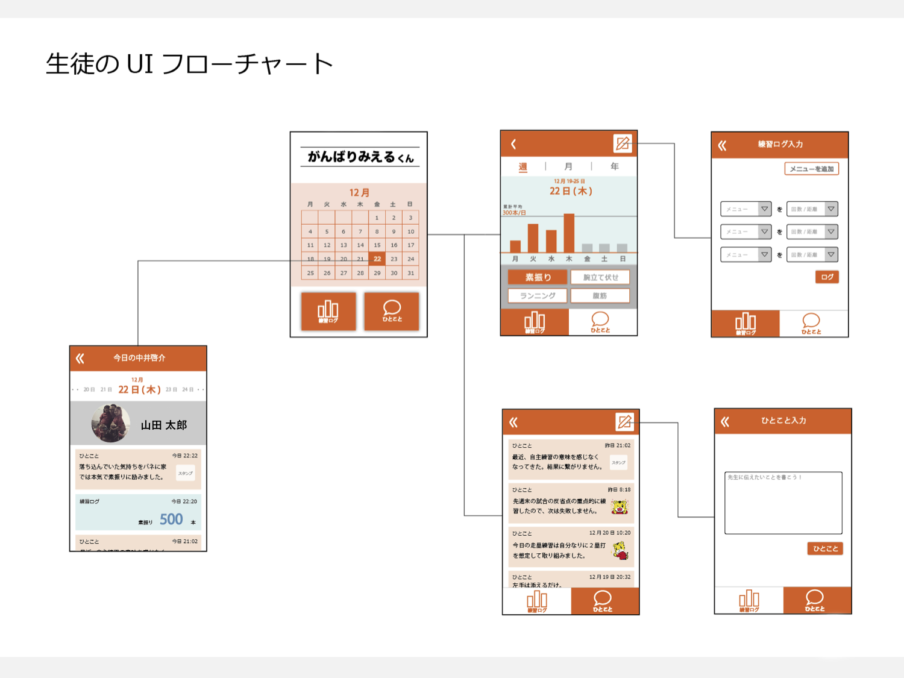

人の心と体の動きの可視化 -JINS MEME-
Mind and body visualization from ma286 on Vimeo.
【作業期間】2016年6月-7月
【作業ボリューム】コード数 約700行
【人数】1人
【担当工程】JINSMEMEというセンサーのついたメガネでデータを収集し、それをプログラムで読み込み、制作しました。収集したデータのうち、何の数値を用いるとどんな形になるのか、どんな意味を込められるのかを考えながらコンセプトを練りました。
【使用ツール】Xcode, openFrameworks
【使用言語】C++
【対応ディバイス】PC
【制作したきっかけ】他大学で受講していた授業の課題として制作しました。テーマや技術の指定はなく、「制作プロセスの中のどこかで、必ずプログラミングをすること」という条件の課題です。
【コンセプト・詳細】
制作物は、近い環境で生活する2人の学生の、目には見えない心の動きと体の変化を可視化した映像です。ここから、近い環境で生活している人たちでも、大きく違いがあることが分かります。ならば、環境が大きく異なる人、通った学校や育った国、信じている宗教が異なる人と価値観や表現が違うのは当たり前ではないでしょうか。
お互いに違うところがある、というのはなんとなく多くの人が認識していることだと思います。それをより自分ごとにして、さらに視点を広げてほしい、認め合ってほしいと思い、可視化というより具体的な形にしました。
この作品の表現には、それぞれ以下のような意味があります。
- 時 回転する時は、時間を示しています。その時間の心と体の変化に合わせて、線が変化します。
- 色 精神の集中度を意味しています。色の変化が少ないほど、精神が集中しています。
- 回転 姿勢の動きを意味します。大きく回転するほど、姿勢の動きも活発です。
- 線が2本 2つ並べることで、見た人が比較することを促しています。
- 形が球である点 地球の丸い形とつなげています。これは、育った国や、信じている宗教が異なれば、心や体の変化の仕方が異なるのは当たり前ではないか、ということを、暗示しています。
- 3次元である点 多面的に見ることを暗示しています。人や物事は、見る角度によって、違う一面が浮かび上がってきます。それを暗示するために、この作品も角度によって見え方が変わるようにしました。
「Digital」を活用した教育サービス がんばりみえるくん

【作業期間】2016年12月 約2日間
【作業ボリューム】企画の立案, 画面のUI設計, 画面のビジュアルの制作, 実装
【人数】5人
【担当工程】企画の立案, 画面のUI設計, 実装
【使用ツール】MIT App Inventor
アプリ制作には、単純なアプリの実装に特化した、MIT App Inventorというツールを用いるという制約がありました。そのため、画面遷移とボタンによる表示の変化のみを実装しました。
【使用言語】MIT App Inventor
【対応ディバイス】Android
【制作したきっかけ】株式会社ベネッセのインターンシップ Digital Plan Workshop にて、 【『Digital』を活用した教育サービスとして、100万に影響を与えるようなアプリケーションを考える】というミッションのインターンで制作しました。
【成果】最優秀賞を受賞しました。
【コンセプト】
これは、中学生の女の子の、部活でレギュラー発表の後、選ばれた子とそうでない子との発言力に大きな差が生まれたり、仲がギクシャクしたりしてしまう。という悩みがあることを、リサーチで聞いた事がきっかけで生まれました。
努力って、レギュラーに選ばれるとか、ソロをもらえるとか、何か大きな結果として見えるようになるまで、気付かれない。先生にも見てもらえない。
けど、大きな結果が出る前に、きっとその子は小さな努力を積み重ねて、小さな結果を出し続けてるはず。
その過程をなんとか、
生徒は、先生から応援してもらえて、明日も頑張ろうと思えるように、
先生は、その生徒の積み重ね途中の努力に気づけて、個々を見られるように。
【詳細】
まず、企画の立案の際に、チームメンバーの身近な人に電話でリサーチを行いました。そして、ターゲットを、中学校の30名以上の部員数を抱える部に所属する生徒と顧問の先生に絞りました。焦点を当てたのは、生徒の「先生から、個人としてなかなか見てもらえない」という問題点と、先生の「教育者として部員一人一人を見たいが、負担が多くて全員をみることができない」という問題点です。
生徒の努力は、大きな結果を出すまで気づかれにくいです。しかし、大きな結果を出す前に、きっとその子は小さな努力を積み重ねて、小さな結果を出し続けています。
したがって、その過程を、
生徒は、先生から応援してもらえる機会が増えれば、
先生は、その生徒の積み重ねの途中の努力に気付くことが出来れば、
問題の解決につながると考えました。
そこで2つの問題を解決するために制作したものが、生徒の頑張りを可視化し、先生はそれに手早くリアクションすることができるアプリです。生徒は自主トレーニングなどの結果を入力し、先生はそれを見ることができます。通勤途中に簡単に操作ができるというアプリの強みと、先生の負担を減らすという目的から、先生のリアクションはスタンプに制限しました。また、先生が口で褒めやすいように、生徒が入力したデータを分析し、その子の頑張りの特徴を示してくれる機能を提案しました。
インターンシップの成果発表の後には、社員の方々に、「これはもし全国の生徒が利用するようになったら、文化になるかもしれない。」というアドバイスをいただきました。もし、全国の部活に所属する生徒が、自主トレーニングメニューを共有するようになったら、甲子園で強い学校の自主トレメニューが注目されたり、成長期特有の悩みを解決するトレーニング法を参考にしたりすることができるかもしれません。そして、TwitterやInstagramのような、1つの文化になる可能性がある、ということに気付くことができました。
くりっきゅん chrome拡張
【作業期間】2016年11月 約2週間
【作業ボリューム】企コンセプト設計, 制作物の決定, ビジュアル設計, 実装
【人数】2人
【担当工程】コンセプト設計, 制作物の決定, ビジュアル設計, 実装
【使用ツール】Atom, Photoshop
【使用言語】HTML, CSS, JavaScript
【対応ディバイス】PC（chome）
【制作したきっかけ】Girls Hack U 2016への参加がきっかけです。開発テーマは「きゅん」です。
【コンセプト】
知り合いの、いつもと違う一面が見えたとき、クリームシチューにハートのにんじんが入っていたとき、思わずきゅん。としませんか。
そこで私たちは、多くの人たちが見慣れているWebページに着目しました。いつものWebページを何気なく見ていると、意識していなかったところからキラキラが溢れ出すchrome拡張を制作しました。ここには意外性が2つ、盛り込まれています。
まず私たちは、「きゅん」とは何かと考えた結果、知り合いのいつもと違う一面が見えた時や、クリームシチューのにんじんがハートだった時に、「きゅん」を感じると思いました。つまり「きゅん」は、日常生活に溶け込んでいる "さりげない意外性"、"紛れ込んだ非日常性（ギャップ）"だと考えました。
1つめは、意識していなかった場所に目がいってしまう、という意外性です。Webページでは、自分が押すリンク以外は普段意識することがほとんどありません。例えば、いつもYahoo！のトップページを開いたら、まず天気を見る人がいるとします。きっとその人は、トップページでは、天気へのリンク以外は見ていません。私もそうです。意識していなかったところから、キラキラが溢れてくることにより、意識してしまう。これが意外性であり、「きゅん」であると、私たちは考えました。
2つめは、昔を彷彿とさせる意外性です。このくりっきゅんの利用者には、20~40歳の女性を想定しています。私たちが昔見た “ セーラームーン ” のようなアニメは、子供の頃は憧れを抱き見ていましたが、大人になるとまったく見なくなります。彼女たちの存在を思い出すことは、私たちにとって “ 非日常 " です。くりっきゅんには、彼女たちを彷彿とさせるデザインを盛り込みました。
リンクを触れたときに出てくるキラキラは、変身シーンの溢れるキラキラを、クリックした際に浮かびあがるハートは、コスチュームを意味しています。
リンクから出るキラキラがピンク色であることにも意味があります。心理学の視点から見ると、女性は子供の頃は大人っぽい印象を与える水色を好む傾向があり、大人になると幼い印象を与えるピンクを好む傾向があるそうです。その理由は、子供の頃は大人っぽくなりたいという気持ちが強く、大人になると反対に可愛らしくなりたいという気持ちが出てくるためだと言われています。以上ような観点から、幼い印象を与え、昔を彷彿とさせるために、ピンク色を選びました。
ポートフォリオサイト
貴家万里加の成果をまとめた、本ポートフォリオサイトです。
設計から、コーディングまですべてを行いました。作品と、その作品を通して作成者の人となりが伝わるように工夫をしました。
メインコンテンツが左側、サイドバーが右側なのは、よりメインコンテンツの文章を読んでもらいやすくするためです。Webサイトでは人の視線は左から右、上から下へと動くことが多いと言われています。
projectページは、作品を1つのページにまとめました。より多くの作品に目を通してもらいやすくするため、ページを移動する際に発生する情報を読み込む時間を省き、スライドするだけですべての作品に目を通すことができるようにしました。
2017.1 / 製作 / Sublime Text
名前 ロゴ制作
Processingを用いて、自分の名前のロゴを制作しました。
それぞれのアルファベットを、パソコンが文字を扱うときに用いられるUnicodeという数値に変換しました。その数値に大きさや色、重さを付け、グラフィックにしました。
愛宕小学校 身の周りにある算数

小学校6年生の授業で、「身のまわりにある算数を探そう」というテーマの授業を行いました。
理科や社会と比べ、算数や数学は将来何のために役に立つのかよくわからないという声を多く聞きます。しかし、実は算数も、他の視点から見てみると、自分の興味との接点や意外な一面があることに気づくことができます。例として、舞台演出や、アニメーションなどがあります。
私はこれらの面白さに、大学に入ってから気づきました。これにもっと早く子供たちが気づくきっかけを作りたいと思い、小学校の先生に提案し、授業を開催しました。